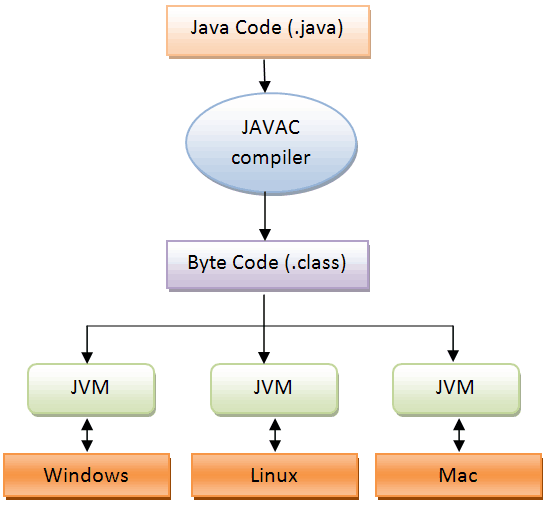
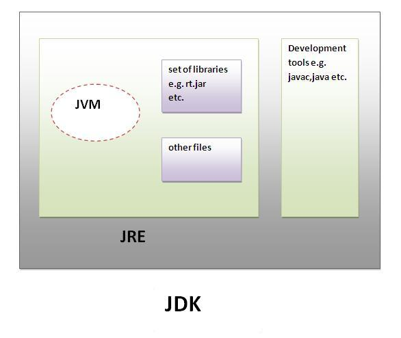

자바 실행 과정

- 개발자는 .java 파일을 작성한다
- javac(컴파일러)가 .java를 .class라는 바이트코드 파일로 변환시킨다
- JVM이 클래스파일을 읽어서 메모리 로드, 기계어 번역 등을 수행해서 실행한다
자바 바이트 코드
- JVM이 이해할 수 있는 언어로 작성된 파일
- 자바 컴파일러에 의해 생성된다
JVM
- 참고자료
- java virtual machine
- 자바프로그램을 컴파일하여 만들어진 바이트코드(클래스 파일) 실행해주는 파일
- 다른 운영체제, 환경에서도 프로그램이 독장할 수 있도록 해준다
- class loader : .class파일들을 runtime data area에 load한다
- execution engine : load된 클래스의 bytecode를 해석해서 binary code화 한다
- runtime data area : JVM이 OS로부터 할당 받은 메모리 영역
- Method area : 모든 thread가 사용. 클래스 정보, 변수 정보, static 변수 정보, 상수 정보 등이 위치
- Heap area : 모든 thread가 사용. 동적으로 생성된 인스턴스 객체가 생성되는 영역. 공간이 부족하면 garbage collection이 동작
- stack area : 각 스레드마다 하나씩 생성. 메서드의 지역변수, 매개변수, 반환값 등이 저장. LIFO 구조
- PC register : 각 스레드마다 하나씩 생성. CPU의 register 역할. 현재 수행중인 명령의 주소값이 저장
- Native Method stack : 각 스레드마다 형성. 다른 언어의 메서드를 사용하기 위한 구역
JRE
- Java runtime environment. 자바 실행 환경
- JVM + 여러 라이브러리
JDK
- java development kit
- JRE + 컴파일러 + 디버거 등
- oracleJDK, openJDK

그림 출처